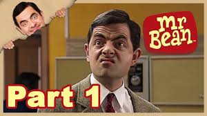

MR BEAN
Actors
- Rowan Atkinson
- Roben Driscoll
- Matilda Ziegler
- Howard Goodall
- Mattew Ashforde
- Roger Slowman
- Rupert Vansittart
- Sussie Mckenna
Age Restriction: 16V
Showing times: 11:00 13:00 16:00
Synopsis
At the Royal National Gallery in London, the bumbling Mr. Bean (Rowan Atkinson) is a guard with good intentions who always seems to destroy anything he touches. Unless, of course, he's sleeping on the job. With the chairman (John Mills) blocking Bean's firing, the board decides to send him to a Los Angeles art gallery under false credentials. When Bean arrives, his chaos-causing ways are as sharp as ever, and curator David Langley (Peter MacNicol) has the unenviable task of keeping Bean in line.